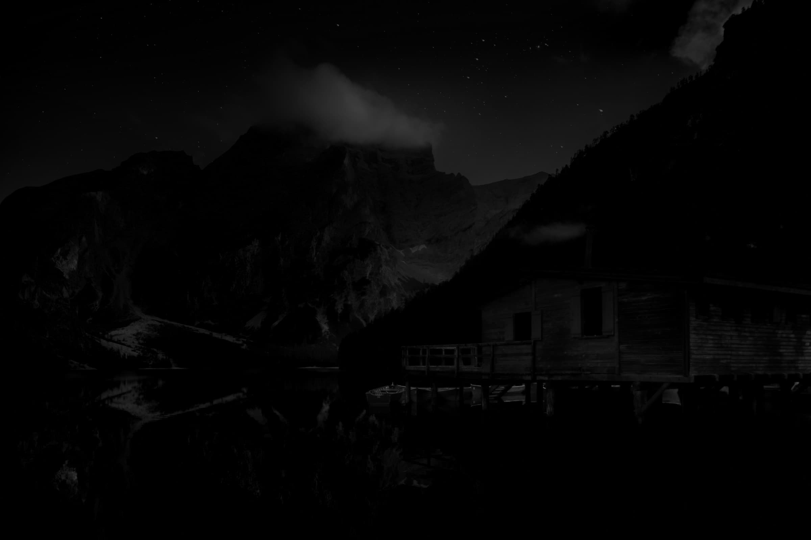
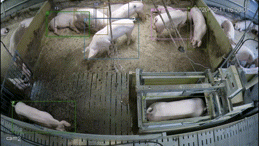
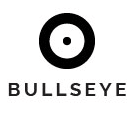
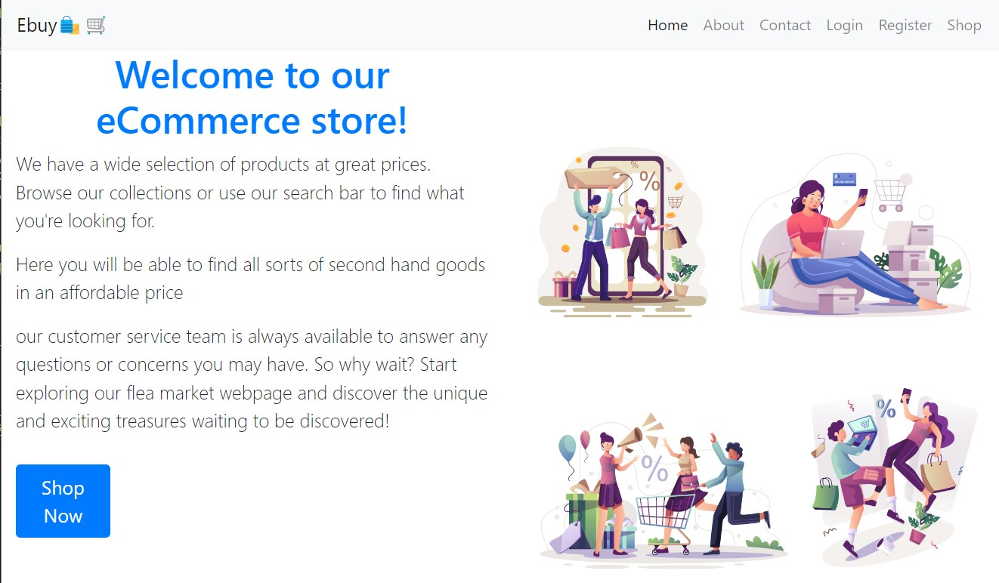

Dev Narayan C. B.
Designing and deploying production-grade AI systems — from real-time agentic voice & vision pipelines to self-supervised learning and multimodal eldercare sensing. Scaled enterprise legal AI to 200+ paying users and published peer-reviewed research at AIAI & BMVC 2023.
(Lejit AI Platform)
(AIAI & BMVC 2023)
(NTNU Eldercare Lab)
(CUSAT AI & Data Science)
Bridging Research & Production Scale
Engineering resilient, low-latency intelligence that solves real-world operational challenges.
Background & Philosophy
I am an AI & Software Engineer and Computer Science researcher with a background spanning self-supervised computer vision, multimodal sensor fusion, and low-latency agentic voice systems.
Having served as the first AI hire at Lejit AI, I spearheaded the core RAG architecture and multilingual OCR engine that scaled the company from concept to over 200+ paid customers. At NTNU (Norway), I investigated non-intrusive welfare monitoring for elderly individuals by harmonizing mmWave radar, pressure flooring, and physiological wearables.
My approach unites mathematical rigor with clean distributed systems engineering — whether tuning Barlow Twins cross-correlation objectives, optimizing Milvus vector caches, or eliminating turn-taking lag in WebRTC voice pipelines.
Core Focus: Self-Supervised Learning (SSL), Real-Time Video/Audio Pipelines, mmWave FMCW Radar, Multi-Agent RAG Orchestration, and High-Throughput Microservices.
Academic Foundation
MSc Computer Science (AI & Data Science)
Cochin University of Science and Technology (CUSAT) 2024 – 2026BSc Computer Science (AI & Data Science)
Cochin University of Science and Technology (CUSAT) 2021 – 2024Professional Experience
Proven leadership in venture-backed AI startups and international university research laboratories.
Project Engineer — Multimodal Eldercare & AI Research
Norwegian University of Science and Technology (NTNU)Architected and deployed a multi-sensor welfare-monitoring research framework designed for non-intrusive Activities of Daily Living (ADL) tracking in elderly-care environments.
- Multimodal Sensor Fusion: Built a synchronized data acquisition system integrating TI AWR6843AOP mmWave FMCW radar, Sensfloor pressure-sensitive flooring, SOMNOtouch physiological wearable sensors, and Captury markerless motion capture across 13 distinct human activity classes.
- Rigorous Experiment Pipeline: Designed the experiment pipeline end-to-end: standardized dataset acquisition across three rooms in a nursing-home simulation lab, session-based train/test splits to eliminate temporal/spatial leakage, and per-class decision threshold tuning to mitigate extreme class imbalance.
- Real-Time SSL on Consumer GPUs: Extended a self-supervised detection architecture (Barlow Twins-based, from 2023 publications) into a real-time inference pipeline running on consumer-grade GPUs without losing detection mAP.
- Data Integrity & Bug Diagnosis: Diagnosed and resolved severe data-integrity anomalies in raw sensor captures (split binary formats, packet loss under heavy USB bus load, session contamination) that were silently corrupting downstream training models.
AI / ML Lead — First AI Hire
Lejit AIFirst AI hire; led development of an agentic RAG platform for legal professionals from prototype to 200+ paying customers. Spearheaded machine learning architecture, document digitisation pipelines, and low-latency microservices.
- Agentic Legal RAG: Fine-tuned LLMs and built agentic RAG pipelines over Indian case-law databases and court judgments for case-reference, argument generation, and statutory citation validation.
- Multilingual Indic OCR Engine: Engineered a deep document-understanding engine capable of digitizing degraded physical legal petitions, court affidavits, and regional language documents across Indic scripts with automated statutory reference linking.
- High-Throughput Distributed Backend: Designed and deployed backend microservices using FastAPI and Node.js for real-time document indexing, SSE token streaming, and collaborative document markup.
- Vector Indexing & Cost Optimization: Optimized Milvus vector clusters with semantic caching and chunk re-ranking, reducing LLM token consumption by over 60% and trimming median retrieval latency to sub-second speeds.
AI Engineer Intern — Intelligent Document Processing
OnFocus Soft Ltd.Developed high-accuracy document intelligence pipelines automating customs shipping declarations and complex invoice processing.
- Customs IDP Pipeline: Built an Intelligent Document Processing engine extracting structured schema from diverse multilingual printed customs bills and commercial invoices.
- Multi-Engine OCR & Noise Reduction: Integrated Azure OCR, Gemini, and GPT with automated pre-processing filters, minimizing character confusion errors and optimizing API throughput.
- Automated Profile Generator: Developed an automated CV synthesis engine structuring raw professional biographies into standardized, ATS-compliant formats.
CareVoice AI — System Architecture
Click each pipeline node below to inspect real-time protocols, latency budgets, and engineering rationale.
Distributed WebRTC & Voice Intelligence Pipeline
End-to-end voice latency kept under 650ms from user utterance to Tavus video playback.
React + Vite + TypeScript Client
Zero-latency audio-video streaming interface. Renders an interactive doctor calendar picker, live dual chat transcripts, audio waveform visualizers, and tool execution badges.
Featured Projects & Case Studies
Selected systems spanning agentic voice assistants, spatial computer vision, and luxury web architecture.

CareVoice AI — Real-Time Voice Agent & Video Avatar
Production-grade clinical intake agent uniting real-time speech-to-text (Deepgram Nova-2), multi-turn reasoning with function calling (GPT-4o), expressive neural voice streaming (Cartesia Sonic), and a photorealistic doctor avatar powered by Tavus over WebRTC via LiveKit Cloud.

Crowd Analytics & Zone Flow Engine
A high-performance, multi-threaded pipeline for real-time person detection, tracking, and zone-based behavioral analytics using YOLOv8, ByteTrack, and a custom spatial vector engine. Includes automated alerting and a modern Gradio web console.

The El Design House
“We do not merely decorate square footage; we choreograph atmosphere, light, and architectural harmony to evoke emotional resonance.”
Bespoke interior design & architectural studio digital experience for luxury hospitality operators, commercial enterprises, and discerning homeowners worldwide.

Lejit AI — Legal Copilot & Indic OCR
Enterprise legal research engine indexing Indian Supreme Court and High Court case law. Powered by custom multilingual OCR, Milvus vector search, and automated citation linking.

Tracking-by-Self Detection (Barlow-EffDet)
A self-supervised multiple object tracking framework utilizing a modified Barlow Twins pre-training strategy and EfficientDet detector. Delivers high MOTA and real-time FPS on consumer GPUs.
Multimodal Welfare-Monitoring System
Non-intrusive activity recognition fusing TI AWR6843AOP mmWave radar point clouds, Sensfloor pressure matting, and SOMNOtouch physiology across 13 ADL classes in a simulated nursing facility.

Multi-View Stereo & Dense 3D Point Cloud
A robust 3D reconstruction pipeline integrating COLMAP Structure-from-Motion (SfM), graph-cut depth map optimization, and multi-view stereo to fuse unordered photo collections into dense metric point clouds.
Eye Cursor — Vision-Driven Navigation
Hands-free OS pointer control using real-time iris landmark tracking with MediaPipe and PyAutoGUI. Calibrated for standard consumer webcams without dedicated hardware.

Commercial & Design Web Platforms
Engineered production websites including Evyra Design Studio, Smart Screws AE industrial supplier platform, and Ebuy Flea Market with Next.js and MongoDB.
Peer-Reviewed Publications
Contributions to international machine learning conferences in self-supervised computer vision.
Tracking-by-Self Detection: A Self-supervised Framework for Multiple Animal Tracking
Introduced a self-supervised tracking framework employing a customized Barlow Twins representation objective and EfficientDet backbone. Achieved robust Multiple Object Tracking Accuracy (MOTA) on farm video with non-industrial GPUs.
Self-supervised Animal Detection in Constrained Environment
Demonstrated that self-supervised pre-training on unlabelled farm footage substantially outperforms standard supervised transfer baselines across varied lighting and occlusion thresholds.
Technical Expertise & Tooling
Technologies and frameworks applied across research investigations and production platforms.
AI & Deep Learning
Vision & Sensor Fusion
Voice AI & Streaming
Backend & Languages
Let’s Build Something Extraordinary
Whether you are assembling a frontier AI team, engineering real-time agentic voice or vision systems, or seeking consulting on research pipelines — my inbox is open.